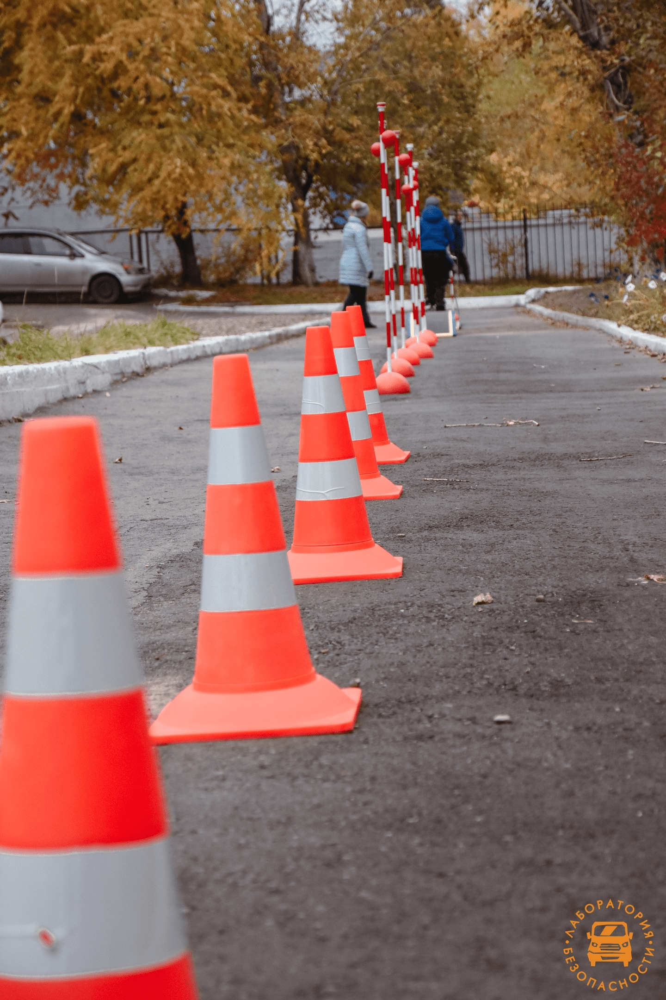
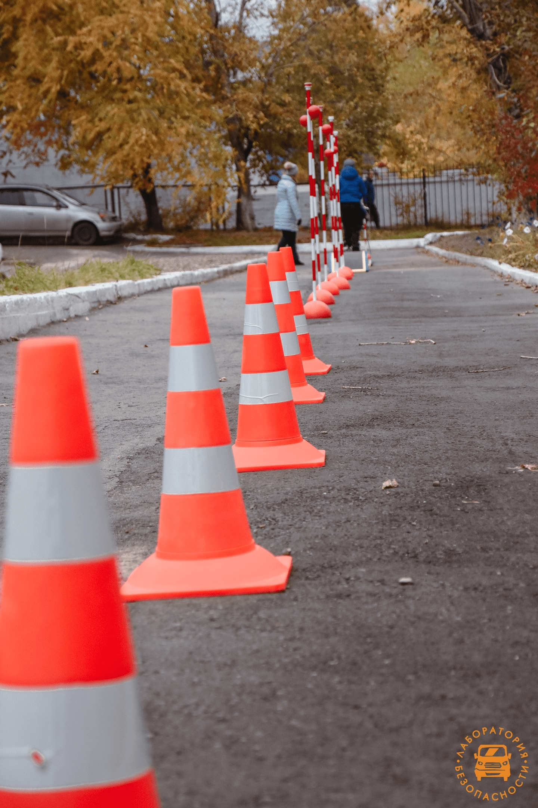

Федеральный проект «Лаборатория безопасности»
«Лаборатория безопасности» — это комплекс технических и методологических инструментов, включающий в себя автомобиль, оборудование и методику проведения занятий. Проект реализуется совместно с МВД России и Союзом автостраховщиков при поддержке Министерства образования и транспорта РФ. Программа открытия центров «Лаборатории безопасности» создана в рамках федеральных кампаний по безопасности дорожного движения и реализуется по поручению Президента Российской Федерации.
 
